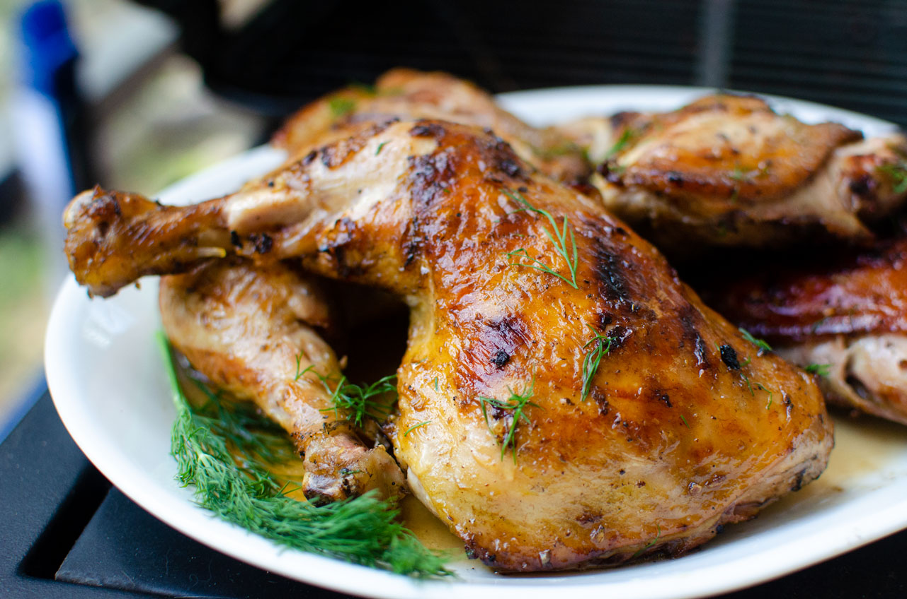

Chicken thighs

Baked Za'atar Chicken Thighs
Boneless, skinless chicken thighs are simply coated in za'atar and olive oil, then baked to perfection. The chicken gets a simple treatment because the za'atar spice mix imparts loads of flavor! Even better, it takes just a couple of minutes to prepare. I like these baked chicken thighs alongside a Middle Eastern inspired side dish, or try them in a wrap or green salad with a tahini dressing.
Ingridients
- 4 boneless, skinless chicken thighs
- 3 tablespoons za'atar
- 2 tablespoons olive oil
- salt to taste
Steps
- Preheat the oven to 350 degrees F (175 degrees C). Line a baking sheet with parchment paper.
- In a bowl, mix together the za'atar, salt, and olive oil until the consistency of a thick paste. Add chicken thighs to the bowl, and toss to coat liberally on all sides. Place on the prepared baking sheet.
- Bake in the preheated oven until chicken is no longer pink in the center and the juices run clear, about 40 minutes. An instant-read thermometer inserted into the center should read at least 165 degrees F (74 degrees C).